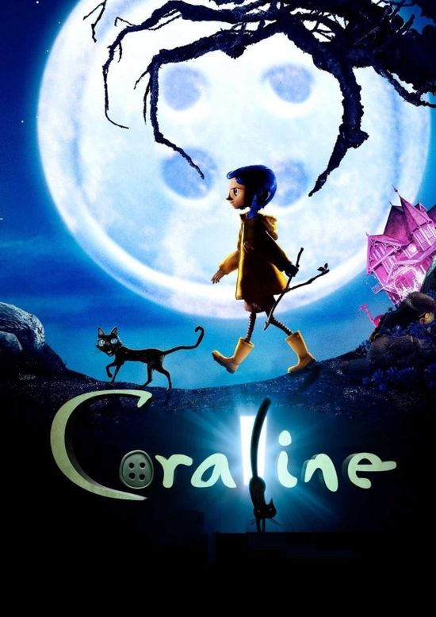

Coraline Jones es una niña de 11 años llena de vida, de curiosidad y mucho más aventurera de lo que haría suponer su edad. Acaba de mudarse con sus padres de Michigan a Oregón. Echa de menos a sus amigos, y al ver que sus padres están muy ocupados por el trabajo, decide encontrar alguna distracción en ese lugar. Wybie Lovat, un chico de su edad que vive en el barrio, quiere ser su amigo, pero ella le considera un pesado. Visita a sus vecinas, dos excéntricas actrices inglesas llamadas Srta. Spink y Srta. Forcible y al aún más excéntrico ruso Sr. Bobinsky. Después de estas experiencias, Coraline empieza a dudar seriamente de si su nuevo hogar le ofrecerá alguna diversión...
Pero se equivoca. Descubre una puerta secreta dentro de su casa. Basta con cruzar la puerta y recorrer un lúgubre pasillo para entrar en otra versión de su vida. Aparentemente, esta realidad paralela es parecida a su vida, pero mejor. Los adultos, entre los que se encuentra una amabilísima Otra Madre, parecen mucho más cariñosos. Incluso el misterioso Gato es más simpático. Coraline empieza a pensar que pertenece a este Otro Mundo. Pero cuando la asombrosa y fantástica visita empieza a hacerse peligrosa y la Otra Madre planea retenerla para siempre, Coraline deberá recurrir a toda su inventiva, determinación y valentía para regresar a casa y salvar a su familia.
El significado de la película puede interpretarse como una exploración de la insatisfacción y el deseo de escapar de la realidad, así como la importancia de valorar lo que tenemos y enfrentar nuestros temores.